Intersection Graph
圖用來表達兩兩之間的關係。例如一群人，我們可以建立「朋友關係」的圖，兩個人是朋友就連一條邊，兩個人不是朋友就沒有邊。只要是兩兩之間的關係，就得以轉化成圖，運用圖論知識來分析問題。
其中有個值得一提的關係是「交集關係」，是聯集交集的那個交集。兩個東西有交集就連一條邊（交集不是空集合）、沒交集就沒有邊（交集是空集合），最後得到的圖叫做「交集圖」。
例如一堆線段，把互相接觸的線段，表示成圖：
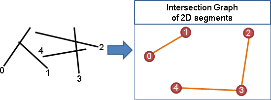
例如一堆集合，把有交集的集合，表示成圖：
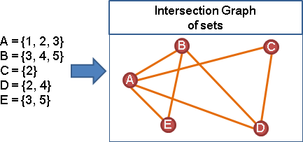
比較特別的交集圖，數學家會特地取名。例如一堆硬幣，平鋪在桌上，把互相接觸的硬幣，表示成圖，稱作Coin Graph。數學家發現硬幣圖和平面圖兩者完全等價，每一種平面圖都可以利用硬幣接觸兜出來。
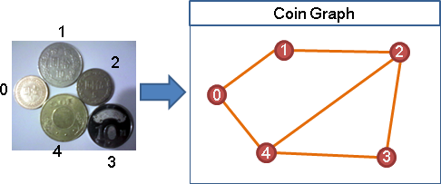
例如行程表，把撞期的行程，表示成圖，稱作Interval Graph，有著很特別的數學性質。
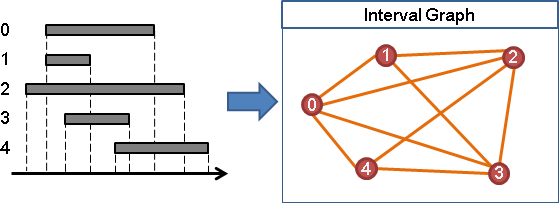
例如一張圖論的圖，把共用端點的邊，表示成圖，就是先前提到的Line Graph。
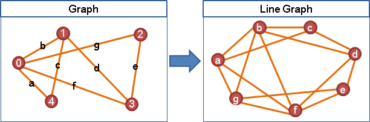
為什麼數學家特別重視交集圖呢？我也不知道。
很多人把交集圖看做是一個物品。但是交集圖其實是一種變換的概念，可以看做是一個函數。
Dependency Graph【尚無正式名稱】
除了「交集關係」之外，數學家也很重視「依賴關係」。把各個東西的仰賴對象表示成圖，最後得到的圖叫做「依賴圖」。
例如一堆不等式，把變數大小關係，表示成圖：
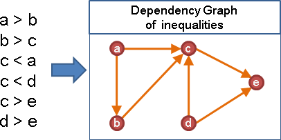
比較特別的依賴圖，數學家會特地取名。例如專案管理領域，把工作先後次序，表示成圖，稱作「Activity Network」。
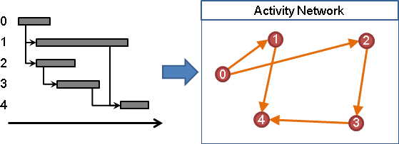
例如2-SAT問題，把各個clause裡面的兩個變數的取捨關係，表示成圖，稱作「Implication Graph」。
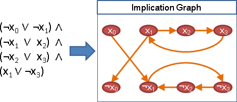
交集圖是無向圖、依賴圖是有向圖，剛好一對。
Subgraph / Supergraph
一張圖，刪除一些點、一些邊，得到的圖稱作「子圖」。
原圖（沒有刪除）、空圖（完全刪除），也算是「子圖」。
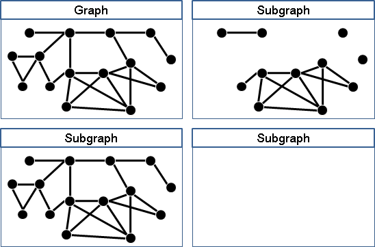
一張圖，增加一些點、一些邊，得到的圖稱作「父圖」。
原圖（沒有增加）也算是「父圖」。
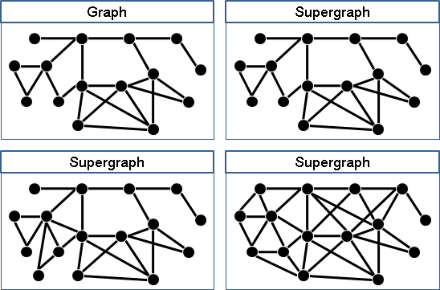
subgraph和supergraph是相對的。如果A是B的子圖，那麼B就是A的父圖。我們習慣只講子圖，講一個就等於兩個都講了。
Induced Subgraph / Induced Supergraph
一張圖，保留一些點、以及這些點之間的所有邊，得到的圖稱作「導出子圖」。
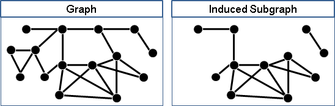
一張圖，增加一些點、一些邊，但是不在原本的點之間增加邊，使得原本的圖是導出子圖，得到的圖稱作「導出父圖」。
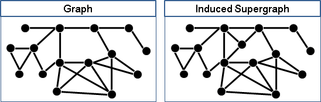
induced subgraph和induced supergraph是相對的。如果A是B的導出子圖，那麼B就是A的導出父圖。我們習慣只講導出子圖，講一個就等於兩個都講了。
Minor / Subdivision
一張圖，收縮一些邊、合併一些點，得到的圖稱作minor。
收縮的邊，有人視情況刪除，也有人視情況不刪除、而變成連向自己的邊。
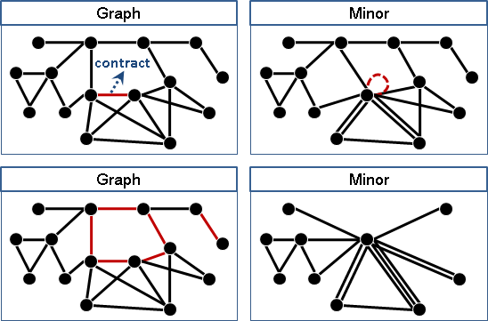
一張圖，在邊上植入點，得到的圖稱作subdivision。
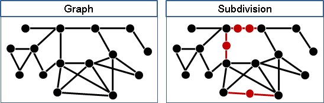
minor和subdivision是相對的。一般只討論minor。
ICPC 4023
Oriented Graph / Underlying Graph
一張無向圖，無向邊改成有向邊，稱做「定向圖」。
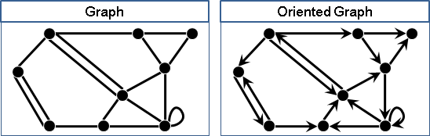
一張有向圖，有向邊改成無向邊，稱作「底圖」。
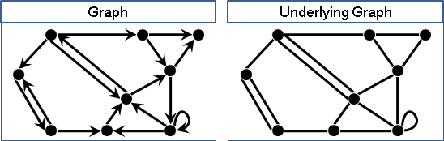
定向圖和底圖是相對的。一般只討論定向圖。
Complement Graph（Complement）
一張圖，兩點之間沒邊變有邊、有邊變沒邊，稱作「補圖」。
原圖暨補圖的所有邊，合起來是完全圖。
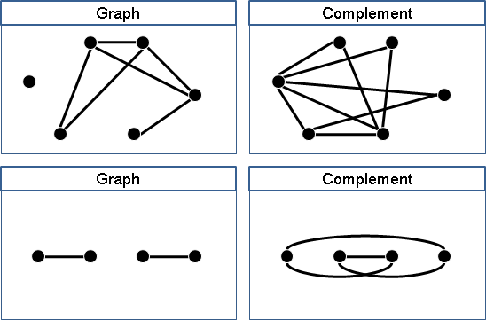
朋友變仇人、有關變無關，整個相反顛倒，就是補圖的用處。
Reverse Graph（Transpose）
一張有向圖，邊的方向顛倒，稱作「反向圖」。
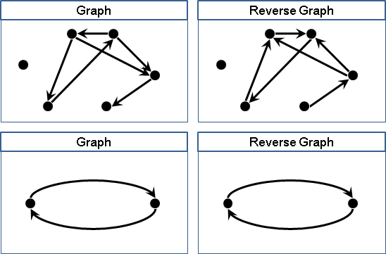
主動變被動、前進變後退，整個相反顛倒，就是反向圖的用處。
Line Graph
一張圖當中，觀察邊與邊關係，相鄰的邊表示成一張圖，稱作「線圖」。
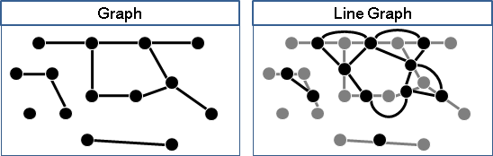
UVa 10988 11175
Dual Graph
一張平面圖當中，觀察面與面關係，共邊的面表示成一張圖，稱作「對偶圖」。詳情請參考「Planar Graph」。